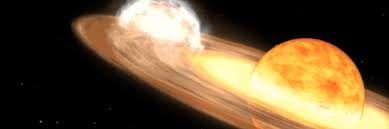
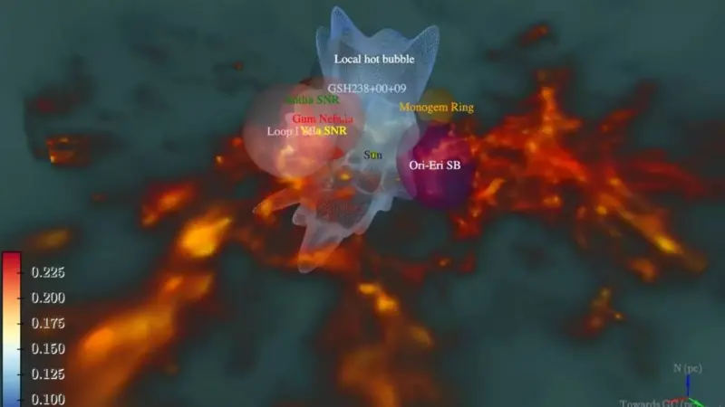
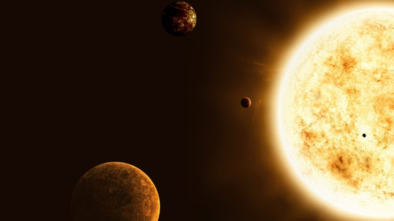

Inicio
Imagenes
Videos
Noticias
Contactos

La NASA y los astrónomos esperan la extraordinaria explosión de una nova

NASA: Una jugosa historia de tomates en la Estación Espacial Internacional
El sorprendente túnel interestelar descubierto por científicos que empieza alrededor del Sistema Solar y se dirige hacia la constelación Centaurus

De esta forma el Sistema Solar podría capturar otro planeta